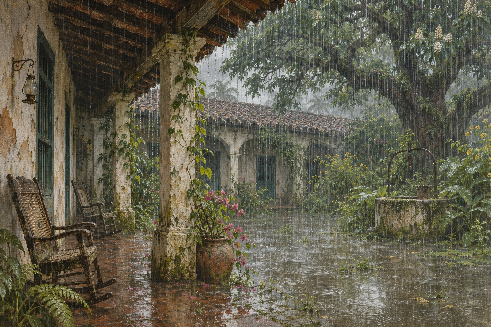

背着幽灵离开
何塞·阿尔卡蒂奥·布恩迪亚与表亲乌尔苏拉结婚，家人担心近亲婚姻会生出异常后代。一次侮辱引发杀人，死者的幽灵此后不断出现。夫妇带着伙伴离开故乡，寻找新的居所；家族的开端既有开拓的勇气，也带着无法立即摆脱的负罪感。
马孔多诞生
一行人在漫长跋涉后停留在河流与石头之间，建立马孔多。何塞·阿尔卡蒂奥·布恩迪亚规划街道与住房，乌尔苏拉经营家庭。最初的小镇远离行政权力和既定历史，看似可以重新开始；家族与聚落从此一起成长，也将一起面对外界的到来。
其一磁铁与冰块
何塞·阿尔卡蒂奥·布恩迪亚用骡子和山羊换了两块磁铁，想用它找金子；他拖着磁铁走过田地，只挖出一副十五世纪的盔甲。后来吉卜赛人带来冰块，他付钱去摸，说这是我们这个时代最伟大的发明。
其二没有人相信
马孔多就是这样建起来的：一群人跟着一个不切实际的念头走进荒地，在那里生儿育女，把荒唐当成日常。
磁铁、炼金术与冰
梅尔基亚德斯带着吉卜赛人的新奇器物来到小镇，磁铁、望远镜和炼金术激起创始人的想象。何塞·阿尔卡蒂奥·布恩迪亚一次次把家庭财物投入试验，还带儿子见识冰。乌尔苏拉则承担现实生活的重量，使探索与日常之间的矛盾留在家中。
冰块与炼金术
吉卜赛人第二次来到马孔多，带来冰块、放大镜和假牙。何塞·阿尔卡蒂奥·布恩迪亚用一块金币换来看冰的机会，摸完之后宣布：这是我们这个时代最伟大的发明。乌尔苏拉在人群外摇头，她知道丈夫又要开始新的疯狂。
离家的长子
长子何塞·阿尔卡蒂奥与庇拉尔·特尔内拉发生关系，阿尔卡蒂奥由此出生。孩子被留在家中抚养，而他的父亲追随吉卜赛人离开。血缘没有得到公开清楚的说明，年轻一代开始在缺失的家庭知识中成长，姓名的重复也逐渐遮住个体差别。
乌尔苏拉带回道路
乌尔苏拉出门寻找儿子，没有把他带回来，却找到了与外界村镇相连的路线。新居民和商品随她进入马孔多，小镇不再只是创始人地图上的孤立世界。她经营糖果、扩大家业，以持续劳动使一家人能够继续生活，也让家庭成为聚落的中心。
失眠与遗忘
带着父母遗骨的雷贝卡被收养，随后失眠症进入家庭并蔓延全镇。人们起初把不睡觉当成额外时间，后来却逐渐忘记事物的名字和用途，只能为物品挂上标签。记忆的崩坏使社会生活面临消失，文字第一次成为小镇抵抗遗忘的脆弱工具。
梅尔基亚德斯归来
曾被认为已经死去的梅尔基亚德斯重新出现，带来的药剂使居民恢复记忆。他住进布恩迪亚家，从事摄影与写作，留下后来难以解读的羊皮卷。家庭以为这些文字只是某个陌生知识体系，却不知道其中保存着与自身命运有关的整体记录。
马孔多的第一次葬礼
梅尔基亚德斯死了。他是第一个死在马孔多的人，也是第一个被埋在这里的人。何塞·阿尔卡蒂奥·布恩迪亚为他守灵一夜，第二天把他埋在河边。从那以后，马孔多开始有了坟。
自动钢琴与情敌
扩建的房屋迎来自动钢琴和教音乐的皮埃特罗·克雷斯皮，雷贝卡与阿玛兰妲对他的感情引发竞争。乌尔苏拉希望以婚姻和家规解决冲突，嫉妒却已经进入两人的生活。音乐带来的优雅没有消除孤独，反而让家庭内部出现长期难以愈合的伤口。
创始人失去共同时间
何塞·阿尔卡蒂奥·布恩迪亚沉入试验与反复的日子，逐渐无法与家人共享同一种现实。他破坏器物，最终被绑在庭院栗树下，此后多年留在那里。原本组织全镇生活的人，成为家中一个活着却难以沟通的存在；乌尔苏拉仍持续照料他。
奥雷里亚诺的婚礼
镇长莫斯科特的到来把国家秩序与政治颜色带进马孔多。奥雷里亚诺爱上镇长年幼的女儿蕾梅黛丝，等待她能够结婚后迎娶她。她对丈夫、旧情所生的孩子和家中病人表现出温和照料，一度使布恩迪亚家获得罕见的安定。

蕾梅黛丝早逝
蕾梅黛丝在怀孕期间突然死去，短暂的家庭平静被打断。她的形象被保留在家中，成为后世仍能看见却渐渐无法理解的旧日记忆。奥雷里亚诺失去妻子，阿玛兰妲也背负自己的恐惧与内疚，家族成员继续把无法言明的伤痛藏进日常。
何塞·阿尔卡蒂奥归来
远游的何塞·阿尔卡蒂奥带着魁梧身躯和刺青回到马孔多，与雷贝卡迅速相爱并结婚。雷贝卡离开原先的婚约，两人也离开乌尔苏拉的家。阿玛兰妲后来同样拒绝克雷斯皮，爱情竞争没有带来任何一方预期的圆满，家庭的裂缝继续扩大。
金匠成为上校
奥雷里亚诺从镇长操纵选举的做法与军队暴行中认识政治，离开金匠作坊，带人参加自由派战争。他把马孔多的事务交给阿尔卡蒂奥，个人生活从此被漫长战事切开。起义起初像是对不公的反抗，日后却会不断侵蚀他与亲人的联系。
阿尔卡蒂奥的短暂统治
代管小镇的阿尔卡蒂奥变得专横，向居民征税、威胁异己，连乌尔苏拉也不得不出面制止。他与桑塔索菲亚组成家庭，孩子们延续布恩迪亚的血统。政府军重新控制马孔多时，他拒绝放弃抵抗，最终被处决，给伴侣与下一代留下生存的负担。
面向行刑队
奥雷里亚诺上校被俘，带回故乡等待处决。乌尔苏拉探望儿子，试图把家庭生活重新接到死亡面前；何塞·阿尔卡蒂奥的介入则改变了行刑的结果。上校再次投入战争，小说开头预示的枪口没有终结他的一生，反而成为反复征战中的一站。
一声没有解释的枪响
何塞·阿尔卡蒂奥在家中被枪杀，血迹穿过街道回到乌尔苏拉脚边。死因没有得到确定解释，不能把悬案写成已知凶手的计划。雷贝卡此后长期闭门独居，曾经轰动全家的爱情，逐渐被锁在一所越来越荒败的房屋之内。
十七个儿子
奥雷里亚诺上校在战争中有了十七个私生子，他们都在额头上带着一个洗不掉的灰十字。他们陆续来到马孔多，被乌尔苏拉收留。后来，他们在同一个夜晚被逐个枪杀，灰十字成了辨认尸体的记号。
黄色花雨
栗树下的何塞·阿尔卡蒂奥·布恩迪亚最终死去，马孔多出现漫天黄花。建立小镇的那一代开始退出生活，乌尔苏拉却继续照看子孙与宅院。死亡没有使开端真正结束：他的名字、执念与孤独，会以不同方式在后来的人身上重新出现。
阿玛兰妲与侄儿
奥雷里亚诺与庇拉尔的儿子奥雷里亚诺·何塞，在阿玛兰妲照料下长大，又对姑姑产生越界感情。她拒绝把这段关系变成共同生活，他却无法彻底摆脱。青年离开又归来，最后在与军人的冲突中被杀，家族的亲密关系再次通向孤独与损失。
阿玛兰妲的黑纱
阿玛兰妲拒绝了所有求婚者，包括她真正爱的皮埃特罗。他自杀后，她把自己的手伸进炉火，烧伤了，从此缠上黑纱。她为那个烧伤守了一辈子，也为自己的拒绝守了一辈子。
战争耗尽了理由
奥雷里亚诺上校经历一次次起义、失败和权力增长，逐渐发现政治口号与利益交换纠缠。他甚至以强硬手段对待旧日战友。乌尔苏拉的干预提醒他仍有不能越过的界限，最后他签署停战协定；战争结束，并没有自动恢复青年时代的信念。

反复制作的小金鱼
上校自杀未遂后退回家庭，在作坊里制作小金鱼，再把完成的作品熔化重做。他拒绝把英雄名声当作新的事业，也越来越少参与家族生活。重复劳动不再指向财富增长，而成为容纳余生的方法；外界继续变化，他则把世界缩回双手能够掌握的范围。
双胞胎的不同道路
阿尔卡蒂奥与桑塔索菲亚的双胞胎儿子常在童年交换身份，长大后走向不同生活。何塞·阿尔卡蒂奥第二逐渐接近劳工与公共事务，奥雷里亚诺第二则与佩特拉相爱，牲畜惊人的繁殖使两人富裕。家族的繁盛再次建立在难以用常理解说的日常上。
费尔南达进入家门
奥雷里亚诺第二迎娶曾在狂欢节出现的费尔南达，却没有结束与佩特拉的关系。费尔南达带来贵族出身的执念、严格礼仪和宗教生活，努力改造布恩迪亚家的习惯。夫妻之间的距离逐渐成为家中规则，孩子们将在相互矛盾的价值中长大。
火车带来的世界
铁路把马孔多接入更大的市场，外国商人和香蕉公司到来，技术、消费与人口迅速改变小镇。新建筑与繁华背后，雇佣劳动和外来权力也在增长。布恩迪亚家的餐桌变得拥挤，乌尔苏拉见证的已不再是自己最初经营的那个封闭聚落。
电灯、电影与电话
火车带来了电灯、电影、电话和香蕉公司。马孔多人在电影院里为银幕上的死人哭泣，散场后却发现那个演员还活着。他们说：这东西不真实。于是电影院的椅子被砸了。
美人蕾梅黛丝升天
美人蕾梅黛丝并不理解人们投射在她身上的欲望，也不按家庭与社会的礼仪生活。在一次收拾床单时，她连同织物升上天空。亲人们以各自方式理解这件事，费尔南达仍惦记被带走的床单；奇迹与家务在同一刻并列，留下一个无法追回的空位。
额头上的十字
上校在战争中所生的十七个儿子曾来到马孔多，他们额头受礼留下的灰十字无法洗去。后来，其中十六人遭到追杀，家族的姓名与标记成了暴力寻找目标的线索。幸存者的命运仍未结束，战争遗产也没有随着停战从下一代生活中消失。
上校的最后一天
奥雷里亚诺上校在日复一日的作坊生活之后死去。官方纪念与家庭哀悼都无法重新接近他内心的孤独，过去的功业被压缩成仪式与故事。费尔南达规定服丧，梅梅的假期也因此改变；一个时代的结束，首先表现为家中音乐和说话声音的降低。
阿玛兰妲缝完殓衣
阿玛兰妲长期把嫉妒、拒绝和失去藏在礼仪与劳动里，后来开始为自己制作殓衣。她以针线计算与死亡相遇的日子，并答应替居民向死者带信。当最后一针完成，她平静地走向结局；多年无法处理的情感没有被抹去，却终于停止继续拖延。
乌尔苏拉失明
乌尔苏拉的眼睛瞎了，却比从前更清楚家里的每一件东西在哪里。她靠听觉和记忆继续操持家务，发现家里人一个个在原地打转。她说：这个家的人在重复，一直在重复。
黄蝴蝶中的恋人
梅梅爱上香蕉公司的机械师毛里西奥·巴比伦，黄色蝴蝶总伴随他出现。费尔南达发现恋情后严加禁锢，并让守卫防范夜间来人。毛里西奥在一次潜入时遭枪击，从此瘫痪；阶层与家规以保护女儿的名义，切断了两个年轻人的共同未来。
被隐藏的第六代
费尔南达把怀孕的梅梅送进修道院，梅梅此后拒绝言语。孩子被送回马孔多，取名奥雷里亚诺，由家中隐瞒其父母身份。他在羊皮卷的房间附近长大，与真正的家族历史隔绝。为维护体面而保守的秘密，使最后两代人难以识别彼此的血缘。
屠杀与官方的否认
何塞·阿尔卡蒂奥第二参加香蕉工人的抗争，在车站集会上遭遇军队开火。他从装满尸体的列车中醒来，跳车返回马孔多，却发现公共叙述正在否认屠杀发生。此后他把记忆带进梅尔基亚德斯的房间；一个活着的见证者与全镇的遗忘正面分开。
其一三千人
香蕉公司工人罢工，军队在广场架起机枪。何塞·阿尔卡蒂奥第二醒来时躺在装满尸体的火车里——三千多人被扔进海里。
其二官方公告
他回到马孔多，发现所有人都在说“什么都没发生”。官方公告说工人们已经回家。他成了唯一记得的人，也成了别人眼里的疯子。
罢工与军令
香蕉公司的工人要求把星期天算作休息日，公司拒绝，军队进驻。广场上架起机枪，军官宣读命令：五分钟后开枪。没有人相信会真的开枪——直到第一排人倒下。
漫长的雨
雨持续四年十一个月零两天，香蕉经济瓦解，房屋、牲畜与日常秩序一同受损。奥雷里亚诺第二在家中寻宝，希望从祖辈积存中恢复财富，却不断破坏地基。等到天晴，小镇迎来的不是旧日繁华的恢复，而是漫长干旱、空车站与越来越少的人。
乌尔苏拉与双胞胎离世
乌尔苏拉衰老、失明，仍靠对家庭生活的记忆维持行动，最终死去。奥雷里亚诺第二为女儿的学费与生活奔忙，何塞·阿尔卡蒂奥第二守着屠杀记忆；兄弟后来在同一天去世，入葬时棺材又被混淆。支撑家族的几种力量接连消失，老宅继续空下去。
被虫蚁夺回的房子
桑塔索菲亚长期无声地照料房屋，最终离开无法再独力维持的宅院。费尔南达与远方儿女通信，仍试图保存体面，后来孤独死去。奥雷里亚诺·巴比伦独自学习语言、研究羊皮卷，外部小镇和家中房间一起缩小，蚂蚁与荒草则逐步扩张。
罗马归来的何塞·阿尔卡蒂奥
被寄望成为教皇的何塞·阿尔卡蒂奥从欧洲回家，实际生活并非母亲想象的模样。他找到乌尔苏拉藏下的金币，短暂挥霍，又在浴池中遭少年们杀害，财富被带走。奥雷里亚诺·巴比伦再次独留老宅，家族最后的遗产无法阻止日常世界的崩散。
阿玛兰妲·乌尔苏拉回来
从欧洲归来的阿玛兰妲·乌尔苏拉带着丈夫加斯东，试图修复房屋，让生活重新活跃。加斯东后来为航空计划离开，她与奥雷里亚诺·巴比伦逐渐相爱。两人未能清楚识别姑侄血缘，家族反复隐藏与遗忘的身世，在最后一次爱情中产生了决定性后果。
房子被蚂蚁吃掉
阿玛兰妲·乌尔苏拉回到马孔多，发现房子已经破败，红蚂蚁从地基一路啃到房梁。她开始打扫，像乌尔苏拉当年那样。可她怀着的孩子，注定要带着一条猪尾巴出生。
带尾巴的婴儿
阿玛兰妲·乌尔苏拉生下一个男婴，孩子带着祖辈一直担忧的猪尾巴。产后出血夺走母亲生命，奥雷里亚诺·巴比伦陷入悲痛，离家寻求安慰，却把婴儿独留屋内。爱情曾使两人以为世界可以重新开始，分娩之后，他们面对的却是无人接续的照料与血缘。
读到自己正在经历的一刻
奥雷里亚诺·巴比伦回家，发现婴儿已被蚂蚁吞噬，终于理解羊皮卷中的家族结局。他开始读出祖先、姓名与自身身世，也读到当下正在发生的事。破译逼近终点时，飓风抹去马孔多；过去、现在与预言在同一间房中合拢，家族的故事随阅读一起结束。
其一羊皮纸
奥雷里亚诺终于读懂梅尔基亚德斯的羊皮纸，上面写着布恩迪亚家族一百年的历史，包括他正在读的这一行。
其二飓风
他读完最后一行，飓风把马孔多从地面上抹去。这个家族不会有第二次机会——因为注定经受百年孤独的家族，不会有第二次机会在大地上出现。